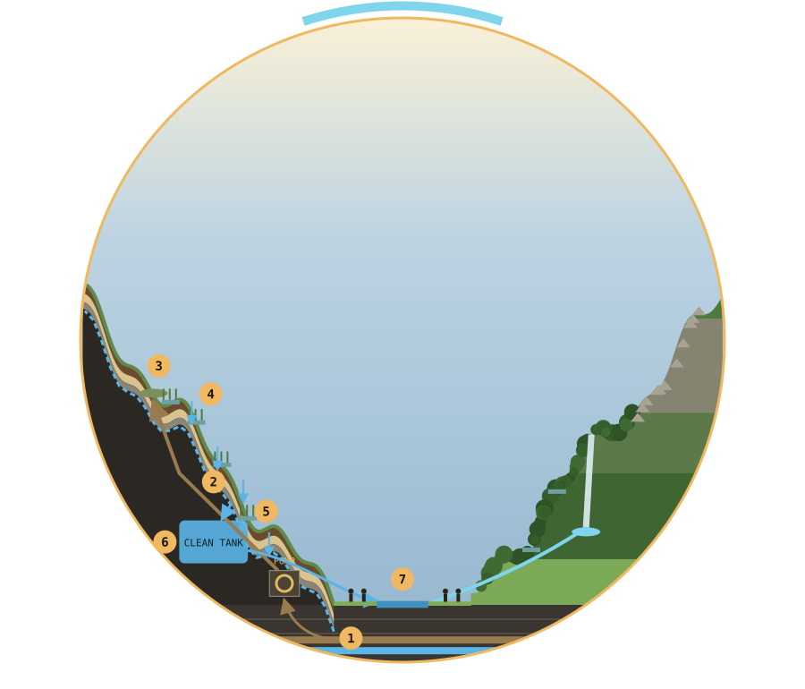
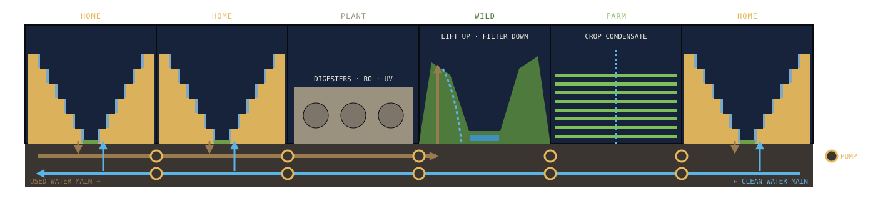

Left mountain cut away to show the inside. Filter layers drawn thicker than real.

Two mains run under every cell. Used water goes one way to the district plant and the nearest wild cell; clean water comes back the other way. Crop condensate from the farm cells is already almost pure, so it joins the clean main directly.
ORDER-OF-MAGNITUDE ESTIMATES
SPECULATIVE CONCEPT